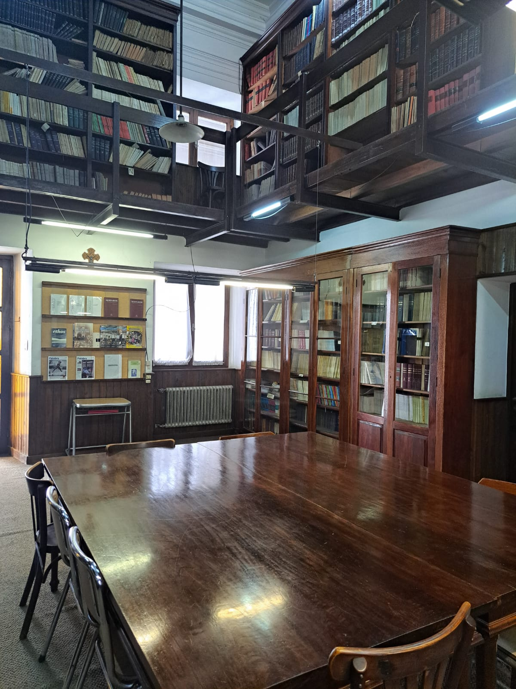

La Hemeroteca, perteneciente al Seminario Mayor de Córdoba, nace a la par de su Biblioteca hace más de cuatro siglos. Por muchos años, fue especializada en Filosofía y Teología; abarcando hoy otras disciplinas del saber como Sociología, Ciencias de la Educación, entre otras.
Historia y Propósito

Esta unidad de información es muy requerida por investigadores de Ciencias de la Comunicación y Ciencias Sociales en general, ya que posee una de las colecciones más completas de la Revista Criterio, Juventud Obrera Católica, Boletines y Revista Eclesiástica.